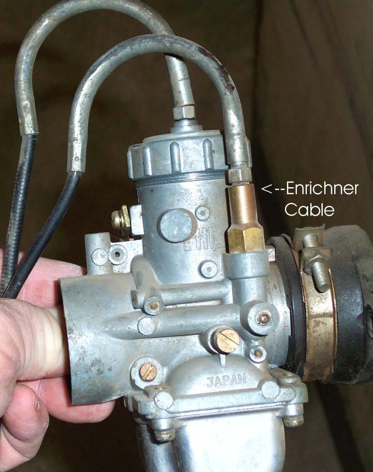
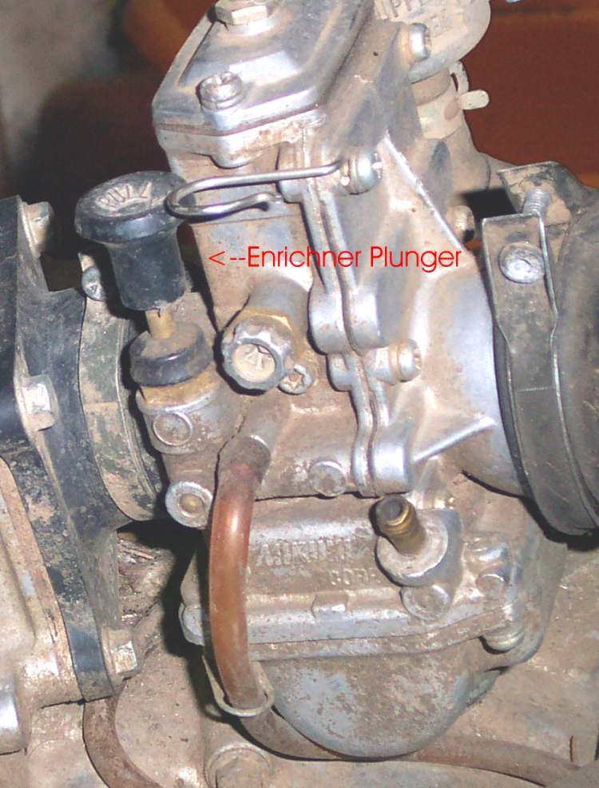
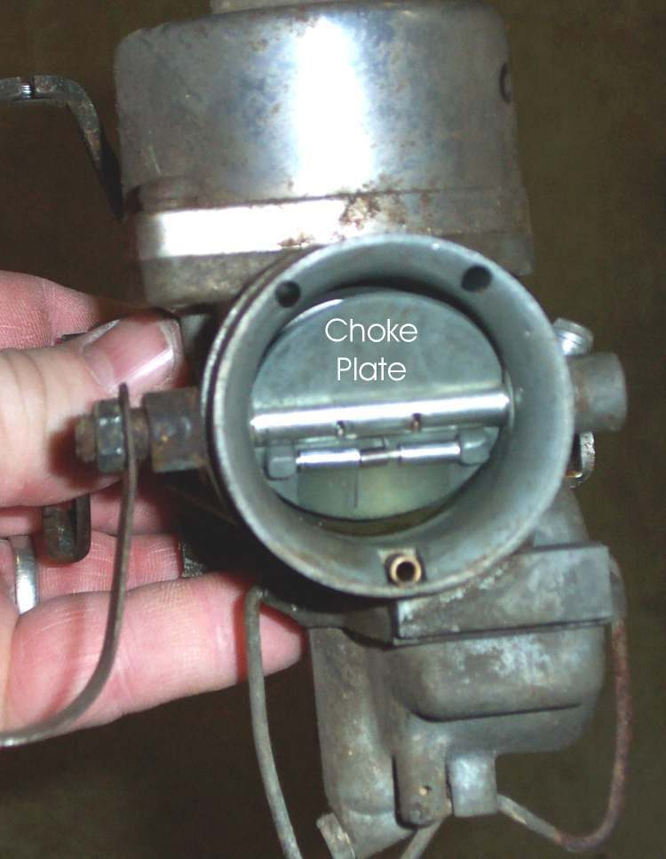
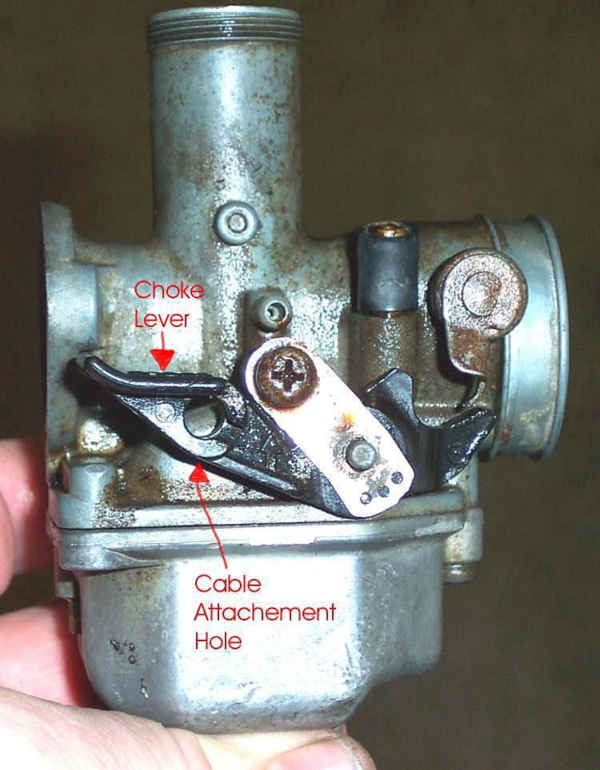
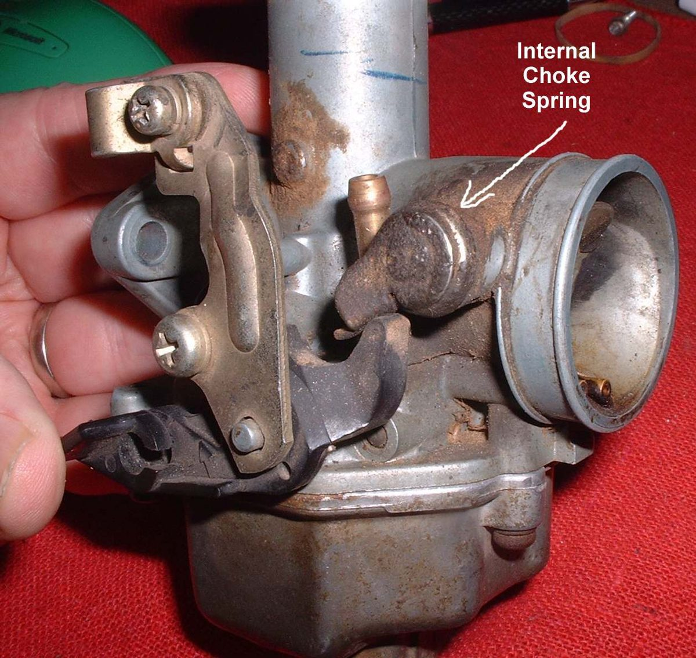
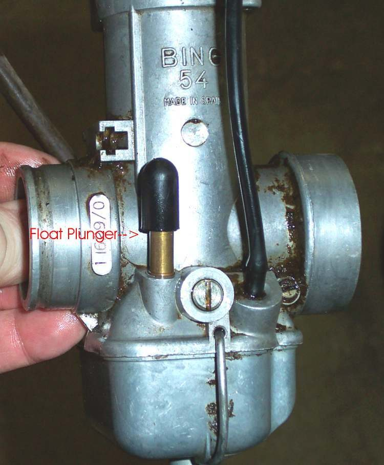
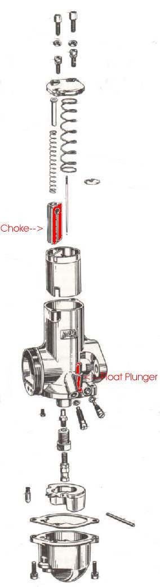

Cold petrol does not turn to vapour well, and only vapour burns. A cold engine therefore needs a richer mixture to start. Carburettors give this in one of three ways: a choke, an enriching circuit (enrichener) or a float plunger. Each has its own starting drill. Fuel-injected bikes do this by themselves.
Safety
- Start the engine outside or with good airflow. Exhaust gas is poisonous.
- Do not keep cranking a flooded engine. The starter motor and battery overheat. See Clear a flooded engine.
- Do not pour fuel or spray starting fluid into the engine in quantity. A stray spark can blow the exhaust off or start a fire.
Find out which type you have
- Choke: a plate in the carburettor throat, worked by a lever or cable.
- Enrichener: a plunger or lever on the carburettor side, often on a cable. There is no plate in the throat.
- Float plunger (tickler): a small button on the float bowl. Pressing it floods the carburettor. Some carburettors have both a choke and a plunger.
Steps
- Turn the fuel tap on and the ignition on.
- Choke: close the choke, open the throttle a small amount (about one eighth to one quarter), then use the starter button or kick start.
- Enrichener: pull the lever or plunger, leave the throttle closed, then start. An open throttle spoils the enriching circuit.
- Float plunger only: hold the plunger down until the carburettor floods, open the throttle a small amount, then start.
- As the engine warms, push the choke or enrichener in, a little at a time, so it does not stall.
- As an engine ages, small changes may help: a little more or less throttle, or one kick with the throttle open and the next with it closed.
If the engine floods
Open the throttle fully and crank the engine with the plug in. Air only goes through the carburettor, so no new fuel is drawn in and the extra fuel clears out.
Check your work
- The engine fires and holds a steady idle after the choke is pushed in.
- It does not die when the choke is fully off.
If it did not fix the problem
- Hard to start even with the choke on: Hard to start when cold.
- Choke lever or cable does not move or return: Choke lever or cable does not work.
- Smell of petrol and wet plug: Engine is flooded.
- On small quad bikes the choke shaft may have a spring. If it breaks, the choke looks shut but is not. Repeated hard cranking then overheats the starter.